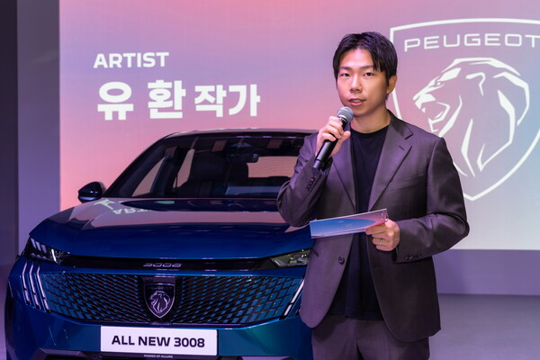
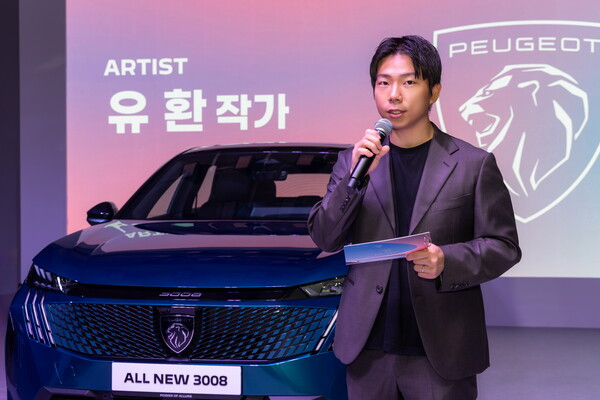

REBIRTH
- Artist: 유환 (YOUHWAN)
- Organizer: Peougeot
- Place: CANDY Seongsu
- Cooperation: Sound/Neo303
Rebirth
《Rebirth》 is a media art piece that reinterprets the sensory and technological essence of the Peugeot ALL NEW 3008 through the language of light and rhythm. By utilizing multi-channel media in spatial composition, the work transforms the automobile from a functional object into a sensory experience, inviting the audience to immerse themselves and participate with their presence. In the beginning, flickering points of light sketch the outline of the 3008 in darkness, symbolizing the emergence of form and presence. As the piece progresses, lasers and displays gradually overlay the vehicle with texture and curves, while the fastback line evolves into a wave of living energy. Peugeot’s signature design elements—the i-Cockpit, the 3 Claws lights, and the lion-inspired silhouette—expand into a full spatial media expression, guiding the audience into an experience as if traveling through a heart made of light. In this moment of unveiling, the audience is invited not just to “see” the car, but to undergo a rebirth—to experience the feeling of becoming something new, through the sensory essence of Peugeot.


 
